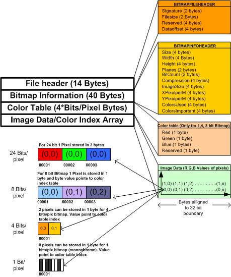

Gestión de datos binarios en Java: flujos, serialización y acceso directo
Idea clave: Todos los ficheros son binarios (bytes), pero podemos distinguir:
Para manejar directamente un fichero binario es imprescindible conocer todos los detalles de su formato. Por ejemplo, un fichero BMP tiene una cabecera estructurada byte a byte:
| Bytes | Contenido |
|---|---|
| 0–1 | Identificador del formato ("BM") |
| 2–5 | Tamaño del fichero (entero 4 bytes) |
| 18–21 | Anchura en píxeles (entero 4 bytes) |
| 22–25 | Altura en píxeles (entero 4 bytes) |

Estructura de cabecera de un fichero BMP y cómo se almacenan los píxeles según su profundidad de color.javax.imageio que simplifican la lectura y escritura de imágenes.
Las clases FileInputStream y FileOutputStream son subclases de las clases abstractas InputStream y OutputStream de la API java.io.
El método read() devuelve el byte leído como int (8 bits útiles, resto a cero), o -1 al llegar al final del fichero.
FileInputStream entrada = null;
try {
entrada = new FileInputStream("fichero.bin");
} catch (FileNotFoundException e) {
System.err.println("Error al abrir el fichero");
}
if (entrada != null) {
try {
while (entrada.available() > 0) {
String hex = Integer.toHexString(entrada.read());
if (hex.length() == 1) System.out.print("0");
System.out.print(hex + " ");
}
entrada.close();
} catch (IOException e) {
System.err.println("Error al leer el fichero");
}
}El constructor acepta un segundo argumento append: true para añadir al final; false (por defecto) para sobreescribir. El método write() toma un int pero solo escribe el byte menos significativo.
FileOutputStream salida = null;
try {
salida = new FileOutputStream("nuevo_fichero.bin");
} catch (FileNotFoundException e) {
System.err.println("Error al abrir el fichero");
}
if (salida != null) {
try {
for (int i = 0; i < 256; i++) {
salida.write(i);
}
salida.close();
} catch (IOException e) {
System.err.println("Error al escribir fichero");
}
}close() para vaciar el buffer y evitar pérdida de datos.
byte[] buffer = new byte[1024];
try (FileInputStream entrada = new FileInputStream("datos.bin")) {
int bytesLeidos = entrada.read(buffer);
System.out.println("Bytes leidos: " + bytesLeidos);
}try (FileInputStream origen = new FileInputStream("original.bin");
FileOutputStream destino = new FileOutputStream("copia.bin")) {
int dato;
while ((dato = origen.read()) != -1) {
destino.write(dato);
}
System.out.println("Copia completada.");
} catch (IOException e) {
System.err.println("Error: " + e.getMessage());
}Permite guardar objetos Java completos en un fichero y recuperarlos en sesiones posteriores de forma transparente.
serialVersionUID (evita InvalidClassException entre versiones)transient los atributos que NO se quieran persistirpublic class MiEmpresa implements Serializable {
private static final long serialVersionUID = 6368263803L;
private List<Cliente> clientes;
private List<Empleado> empleados;
private List<Producto> productos;
private double capital;
private String nombre;
public MiEmpresa() { // constructor por defecto obligatorio
clientes = new ArrayList<>();
empleados = new ArrayList<>();
productos = new ArrayList<>();
capital = 100000;
nombre = "Mi Empresa";
}
}public static void guardarDatos(MiEmpresa me) {
try {
ObjectOutputStream salida = new ObjectOutputStream(
new FileOutputStream("mi_empresa.dat"));
salida.writeObject(me);
salida.close();
} catch (Exception e) {
System.err.println("Error al guardar: " + e.getMessage());
}
}public static MiEmpresa cargarDatos() {
MiEmpresa me;
try {
ObjectInputStream entrada = new ObjectInputStream(
new FileInputStream("mi_empresa.dat"));
me = (MiEmpresa) entrada.readObject();
entrada.close();
} catch (Exception e) {
System.err.println(e);
me = new MiEmpresa(); // primera ejecucion: fichero no existe aun
}
return me;
}Los datos deben leerse en el mismo orden en que se escribieron.
// ESCRITURA
try (ObjectOutputStream out = new ObjectOutputStream(
new FileOutputStream("datos.dat"))) {
out.writeInt(42);
out.writeDouble(3.14);
out.writeBoolean(true);
}
// LECTURA — mismo orden
try (ObjectInputStream in = new ObjectInputStream(
new FileInputStream("datos.dat"))) {
int num = in.readInt();
double pi = in.readDouble();
boolean flag = in.readBoolean();
System.out.println(num + " / " + pi + " / " + flag);
}Permite acceder a cualquier posición del fichero sin leerlo completo, como si fuera un array de bytes con un puntero interno (filePointer).
| Modo | Descripcion |
|---|---|
"r" | Solo lectura |
"rw" | Lectura y escritura |
"rws" | Lectura/escritura + sincronizacion inmediata (datos y metadatos) |
"rwd" | Lectura/escritura + sincronizacion solo de datos (mayor rendimiento) |
RandomAccessFile fichero = null;
try {
fichero = new RandomAccessFile("imagen.bmp", "r");
} catch (FileNotFoundException e) {
System.err.println("Error al abrir el fichero");
System.exit(-1);
}
try {
fichero.seek(18); // posicion 18: anchura (4 bytes, Little Endian)
int ancho = Integer.reverseBytes(fichero.readInt());
int alto = Integer.reverseBytes(fichero.readInt()); // posicion 22
fichero.close();
System.out.println("Imagen: " + ancho + " x " + alto + " pixels");
} catch (IOException e) {
System.err.println("Error al leer el fichero");
}int nuevaAltura = 50;
try (RandomAccessFile fichero = new RandomAccessFile("imagen.bmp", "rw")) {
fichero.seek(22);
fichero.writeInt(Integer.reverseBytes(nuevaAltura));
System.out.println("Altura modificada a " + nuevaAltura + " px.");
} catch (IOException e) {
System.err.println("Error: " + e.getMessage());
}Guardando registros de tamano fijo podemos acceder directamente al registro N calculando su posicion: seek(N * TAM_REGISTRO).
final int TAM_REGISTRO = 4 + 8; // int (4B) + double (8B) = 12 bytes
try (RandomAccessFile raf = new RandomAccessFile("registros.dat", "rw")) {
// Escribir 5 registros
for (int i = 0; i < 5; i++) {
raf.writeInt(i);
raf.writeDouble(i * 1.5);
}
// Leer el registro 3 directamente
int numRegistro = 3;
raf.seek((long) numRegistro * TAM_REGISTRO);
int id = raf.readInt();
double valor = raf.readDouble();
System.out.println("Registro 3: id=" + id + ", valor=" + valor);
}seek(pos) mueve el puntero; getFilePointer() consulta la posicion actual; length() devuelve el tamano del fichero.
| Característica | FileInputStream / FileOutputStream | ObjectInputStream / ObjectOutputStream | RandomAccessFile | BufferedReader / BufferedWriter | FileReader / FileWriter | PrintWriter |
|---|---|---|---|---|---|---|
| Tipo de acceso | Secuencial | Secuencial | Directo (aleatorio) | Secuencial (bufferizado) | Secuencial | Secuencial |
| Qué se guarda | Bytes crudos | Objetos Java completos | Bytes / tipos primitivos | Texto (caracteres) con codificación | Texto (caracteres) sin buffer interno | Texto con formato y salto de línea automático |
| Facilidad de uso | Media | Alta | Media-baja | Alta (línea a línea) | Media | Alta (printf-style, println) |
| Compatible con otros lenguajes | Sí | No (Java) | Sí (cuidado con Endian) | Sí | Sí | Sí |
| Acceso a posición arbitraria | No | No | Sí (seek) | No | No | No |
| Serializar objetos complejos | No | Sí (automático) | No (manual) | No (solo texto) | No | No (solo texto) |
| Rendimiento | Alto | Medio | Alto | Alto (buffer reduce I/O) | Medio-bajo (sin buffer) | Alto (internamente puede usar buffer) |
| Caso de uso típico | Copiar / procesar ficheros byte a byte | Persistencia de objetos Java | Archivos binarios con acceso aleatorio, cabeceras BMP | Leer/escribir ficheros de texto grandes línea a línea | Pequeños ficheros de texto | Generar ficheros de texto con formato (logs, CSV, reports) |
BufferedReader / BufferedWriter son wrappers sobre FileReader / FileWriter que reducen accesos al disco y permiten métodos como readLine() y newLine().PrintWriter facilita escritura formateada y automática de saltos de línea, útil para logs o CSV.FileInputStream / FileOutputStream o RandomAccessFile.ObjectInputStream / ObjectOutputStream automatizan la serialización.| Error | Causa | Solucion |
|---|---|---|
| No cerrar el fichero | El buffer de escritura no se vacia; perdida de datos | Usar siempre close() o try-with-resources |
Olvidar implements Serializable |
NotSerializableException al intentar guardar |
Implementar Serializable en la clase y en todas sus clases miembro |
No declarar serialVersionUID |
InvalidClassException al cambiar la clase y leer ficheros viejos |
Declarar siempre private static final long serialVersionUID = ...L; |
| Leer en orden distinto al escrito | Datos incorrectos o excepcion | Mantener el mismo orden de lectura y escritura; documentarlo |
| Ignorar Endianness | Numero leido incorrecto en ficheros externos (p.ej. BMP) | Usar Integer.reverseBytes() al leer enteros de ficheros no Java |
No capturar ClassNotFoundException |
Error de compilacion al usar readObject() |
readObject() lanza IOException y ClassNotFoundException; capturar ambas o usar Exception |
Usar available() en flujos de red |
available() puede devolver 0 aunque queden datos por llegar |
En ficheros locales es seguro; en flujos de red usar read() != -1 |
Desde Java 7, el fichero se cierra automaticamente aunque haya excepcion:
try (FileInputStream entrada = new FileInputStream("datos.bin")) {
int dato;
while ((dato = entrada.read()) != -1) {
System.out.print(Integer.toHexString(dato) + " ");
}
} catch (IOException e) {
System.err.println("Error: " + e.getMessage());
}
// entrada.close() se llama automaticamenteEjercicio 1 — Contar bytes de un fichero
Escribe un programa que abra un fichero binario cualquiera e imprima cuantos bytes tiene.
import java.io.*;
public class ContarBytes {
public static void main(String[] args) {
try (FileInputStream entrada = new FileInputStream("fichero.bin")) {
int contador = 0;
while (entrada.read() != -1) contador++;
System.out.println("El fichero tiene " + contador + " bytes.");
} catch (IOException e) {
System.err.println("Error: " + e.getMessage());
}
}
}Ejercicio 2 — Guardar y recuperar una lista de productos
Crea la clase Producto (id: int, nombre: String, precio: double) serializable.
Guarda una lista con 3 productos en productos.dat y vuelve a cargarla imprimiendo cada producto.
import java.io.*;
import java.util.*;
class Producto implements Serializable {
private static final long serialVersionUID = 1L;
private int id;
private String nombre;
private double precio;
public Producto() {}
public Producto(int id, String nombre, double precio) {
this.id = id; this.nombre = nombre; this.precio = precio;
}
public String toString() {
return id + " | " + nombre + " | " + precio + "EUR";
}
}
public class GestionProductos {
public static void guardar(List<Producto> lista) throws Exception {
try (ObjectOutputStream out = new ObjectOutputStream(
new FileOutputStream("productos.dat"))) {
out.writeObject(lista);
}
}
@SuppressWarnings("unchecked")
public static List<Producto> cargar() throws Exception {
try (ObjectInputStream in = new ObjectInputStream(
new FileInputStream("productos.dat"))) {
return (List<Producto>) in.readObject();
}
}
public static void main(String[] args) throws Exception {
List<Producto> productos = new ArrayList<>();
productos.add(new Producto(1, "Teclado", 45.99));
productos.add(new Producto(2, "Raton", 19.50));
productos.add(new Producto(3, "Monitor", 299.00));
guardar(productos);
System.out.println("Lista guardada.");
List<Producto> recuperados = cargar();
recuperados.forEach(System.out::println);
}
}Ejercicio 3 — Base de datos simple con RandomAccessFile
Crea un fichero que almacene 5 registros con la estructura: id (int, 4B) + puntuacion (double, 8B).
Despues lee el registro numero 2 directamente sin leer los anteriores.
import java.io.*;
public class BaseDatosSimple {
static final int TAM_REGISTRO = 4 + 8; // int + double = 12 bytes
public static void main(String[] args) throws IOException {
// ESCRITURA
try (RandomAccessFile raf = new RandomAccessFile("scores.dat", "rw")) {
for (int i = 0; i < 5; i++) {
raf.writeInt(i + 1);
raf.writeDouble(100.0 - i * 7.5);
}
}
// LECTURA DIRECTA del registro 2 (indice 2)
try (RandomAccessFile raf = new RandomAccessFile("scores.dat", "r")) {
int numRegistro = 2;
raf.seek((long) numRegistro * TAM_REGISTRO);
int id = raf.readInt();
double score = raf.readDouble();
System.out.println("Registro 2: id=" + id + ", puntuacion=" + score);
}
}
}Ejercicio 4 — Verificar cabecera de un fichero BMP
Abre un fichero e imprime "Es un BMP valido" si sus dos primeros bytes son 'B' (66) y 'M' (77). Si no, indica que el formato es incorrecto.
import java.io.*;
public class VerificarBMP {
public static void main(String[] args) throws IOException {
try (RandomAccessFile raf = new RandomAccessFile("imagen.bmp", "r")) {
int b1 = raf.read(); // 'B' = 66
int b2 = raf.read(); // 'M' = 77
if (b1 == 'B' && b2 == 'M') {
System.out.println("Es un BMP valido. Tamano: "
+ raf.length() + " bytes.");
} else {
System.out.println("Formato incorrecto. Cabecera: "
+ (char)b1 + (char)b2);
}
}
}
}seek()reverseBytes() al leer ficheros externosserialVersionUID en clases serializables